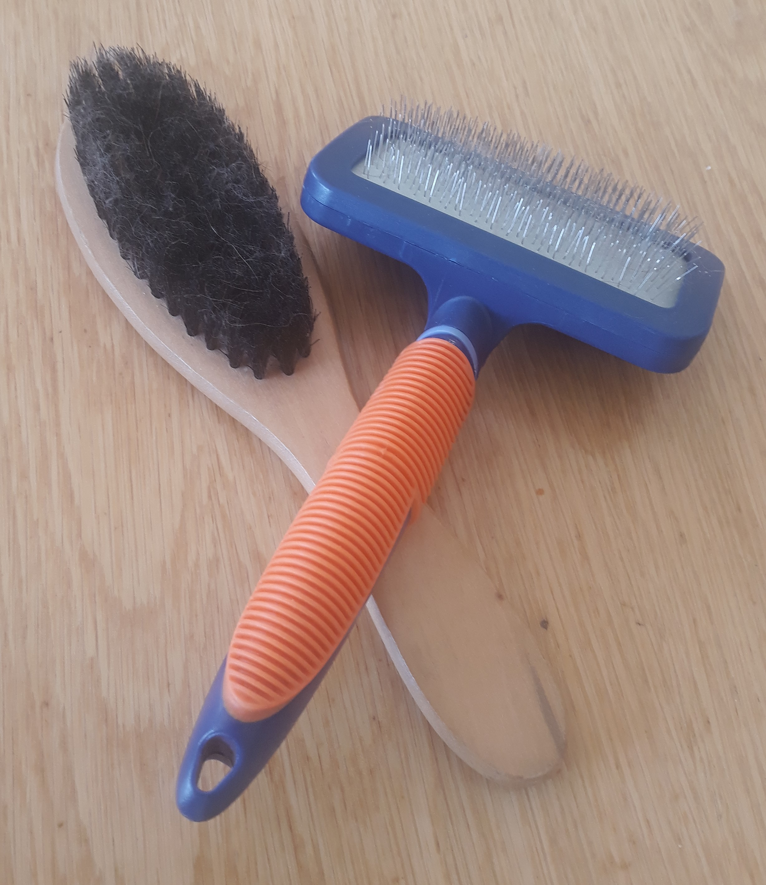

Grooming is an important aspect of the care of a dog without proper grooming then their hair, if left alone, will grow too long and get noted up causing the dog to overheat especially during the warmer seasons which can lead to death. Then there are their nails if they are not trimmed, they might damage furniture it might also so make it hard for the dog to walk. Finally, there are their teeth if they are not taken care of daily, they will get cavities and have to be removed similar to humane teeth to stop this it is advised that dogs are given some kind of dental stick at least once a day in order to prevent this from happening.